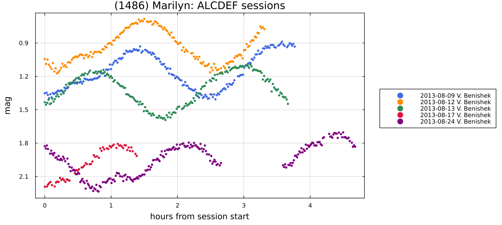
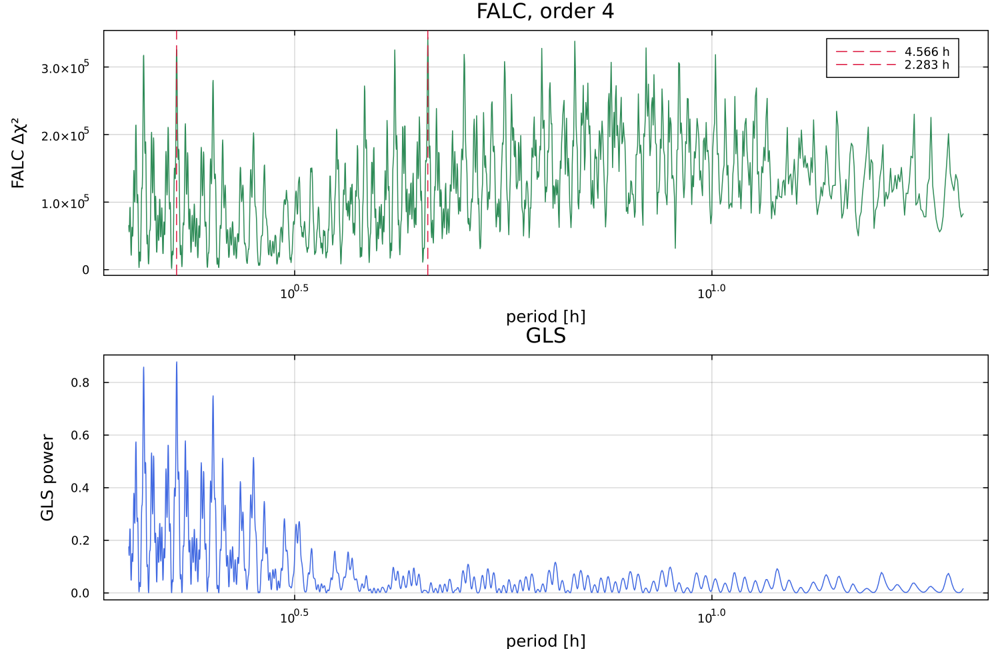
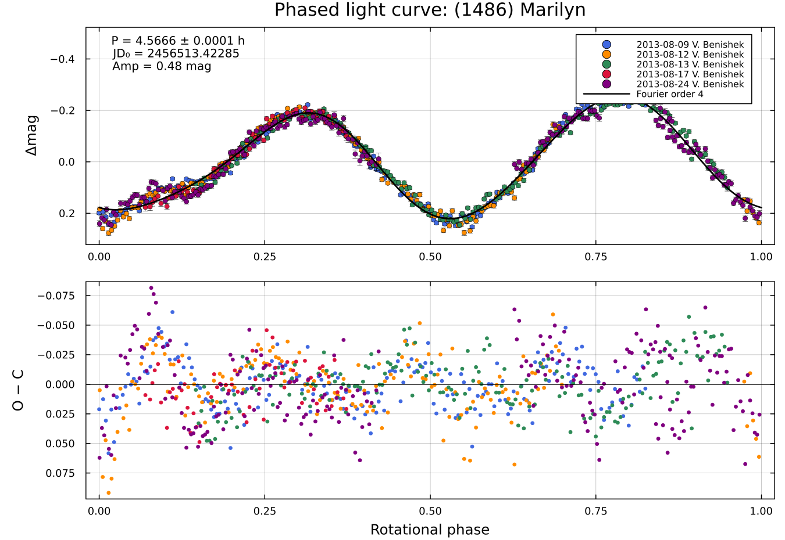
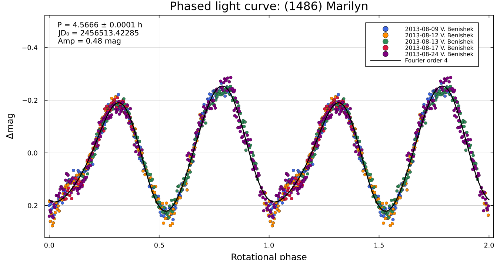
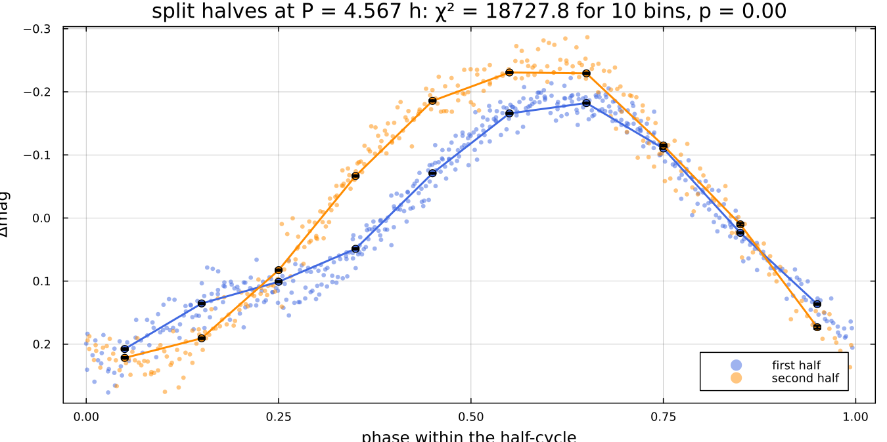

(1486) Marilyn from ALCDEF light curves
Script: examples/1486_marilyn_alcdef.jl.
Five dense light curves of 2013 are downloaded from alcdef.org (fetch_alcdef) and compared with the LCDB entry (lcdb_entry). The times are corrected for light time with the geocentric distance from JPL Horizons (observing_geometry, light_time_correct). FALC with one zero point per session finds the rotation period, the GLS periodogram half of it (double-peaked light curve); fit_period refines the period with its error, and the result is plotted in the style of the Minor Planet Bulletin (plot(fit; residuals=true)).
==============================================================================
1. Data: ALCDEF light curves and the LCDB entry
==============================================================================
ALCDEFBlock(1486 Marilyn, 2013-08-09 00:10:00, 194 points, C/R, V. Benishek)
ALCDEFBlock(1486 Marilyn, 2013-08-12 00:52:00, 160 points, C/R, V. Benishek)
ALCDEFBlock(1486 Marilyn, 2013-08-13 00:40:00, 182 points, C/R, V. Benishek)
ALCDEFBlock(1486 Marilyn, 2013-08-17 22:00:00, 59 points, C/R, V. Benishek)
ALCDEFBlock(1486 Marilyn, 2013-08-24 23:20:00, 215 points, C/R, V. Benishek)
LCDB: P = 4.566 h, amplitude 0.42–0.48 mag, U = 3
==============================================================================
2. Light-time correction (geocentric distance from JPL Horizons)
==============================================================================
Δ = 0.922–0.960 au → light time 7.7–8.0 min; phase angle 3.3–13.0°
==============================================================================
3. Period search (FALC with one zero point per session; GLS)
==============================================================================
FALC (order 4) best P = 4.5660 h; GLS best P = 2.2840 h (half the rotation period for a double-peaked curve)
==============================================================================
4. Period fit with the period free; Fourier order
==============================================================================
order 2: χ²_red 21.09, amplitude 0.465, BIC 16951.9
order 3: χ²_red 14.26, amplitude 0.476, BIC 11469.4
order 4: χ²_red 11.43, amplitude 0.478, BIC 9197.2
order 5: χ²_red 8.59, amplitude 0.466, BIC 6929.7
order 6: χ²_red 8.23, amplitude 0.464, BIC 6641.3
order 7: χ²_red 7.97, amplitude 0.466, BIC 6430.6
order 8: χ²_red 7.15, amplitude 0.473, BIC 5785.4
PeriodFit((1486) Marilyn: P = 0.190277 ± 0.000003 (4.56664 ± 0.00008 h), order 4, amplitude 0.475, χ²_red 10.59, 810 points, 5 groups)
P = 4.5666 ± 0.0001 h (LCDB 4.566 h), amplitude 0.48 mag, epoch of maximum brightness JD 2456513.57257
split halves at P: χ² = 18727.8 for 10 bins, p = 0 (two different halves: double-peaked)
figures: output.txt, periodograms.png, phased_lightcurve_2cycles.png, phased_lightcurve_mpb.png, sessions_raw.png, split_halves.png




